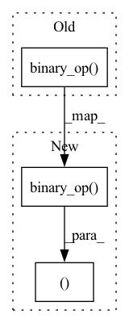

Pattern ID :22810
Before Change
class Maximum(Function):
def forward(self, x, y):
ret = x.binary_op( BinaryOps.MAX, y)
self.save_for_backward(y, ret)
return ret
def backward(self, grad_output):After Change
class Maximum(Function):
def forward(self, x, y):
self.y, self.ret = y, x.binary_op(BinaryOps.MAX, y)
return self.ret
def backward(self, grad_output):
mask = self.y.binary_op(BinaryOps.CMPEQ, self.ret)In pattern: SUPERPATTERN
Frequency: 4
Non-data size: 3
Instances Fragment ID: 72413504
Project Name: geohot/tinygrad
Commit Name: f4aa3868e354d4d89aad96f0517c56e125d41a06
Time: 2023-02-28
Author: george@comma.ai
File Name: tinygrad/mlops.py
M Class Name: Maximum
N Class Name: Maximum
M Method Name: forward(3)
N Method Name: forward(3)
M Parent Class: Function
N Parent Class: Function
M File Name: tinygrad/mlops.py
N File Name: tinygrad/mlops.py
M Start Line: 61
M End Line: 63
N Start Line: 57
N End Line: 58
Before Change
x,y,powxy = self.saved_tensors
grad_x, grad_y = None, None
if self.needs_input_grad[0]:
tmp = y.binary_op(BinaryOps.MUL, powxy.binary_op( BinaryOps.DIV, x) ) // y * (pow(x,y)/x)
grad_x = grad_output.binary_op(BinaryOps.MUL, tmp)
if self.needs_input_grad[1]:
tmp = x.unary_op(UnaryOps.LOG).binary_op(BinaryOps.MUL, powxy) // log(x) * pow(x,y)After Change
x,y,powxy = self.saved_tensors
// grad_x = grad_output * y * (pow(x,y)/x)
// grad_y = grad_output * log(x) * pow(x,y)
return grad_output.binary_op(BinaryOps.MUL, y.binary_op(BinaryOps.MUL, powxy.binary_op(BinaryOps.DIV, x))) if self.needs_input_grad[0] else None, \
grad_output .binary_op(BinaryOps.MUL, x.unary_op(UnaryOps.LOG).binary_op(BinaryOps.MUL, powxy)) if self.needs_input_grad[1] else None
// ************* movement ops *************
Fragment ID: 72413506
Project Name: geohot/tinygrad
Commit Name: db56297011a5c03d7467ed9061150c9d2a87a320
Time: 2022-08-30
Author: george@comma.ai
File Name: tinygrad/mlops.py
M Class Name: Pow
N Class Name: Pow
M Method Name: backward(2)
N Method Name: backward(2)
M Parent Class: Function
N Parent Class: Function
M File Name: tinygrad/mlops.py
N File Name: tinygrad/mlops.py
M Start Line: 109
M End Line: 116
N Start Line: 110
N End Line: 111
Before Change
class Pow(Function):
def forward(self, x, y):
ret = x.binary_op( BinaryOps.POW, y)
self.save_for_backward(x, y, ret)
return ret
def backward(self, grad_output):After Change
class Pow(Function):
def forward(self, x, y):
self.x, self.y, self.ret = x, y, x.binary_op(BinaryOps.POW, y)
return self.ret
def backward(self, grad_output):
return grad_output.binary_op(BinaryOps.MUL, self.y.binary_op(BinaryOps.MUL, self.ret.binary_op(BinaryOps.DIV, self.x))) if self.needs_input_grad[0] else None, \ Fragment ID: 72413509
Project Name: geohot/tinygrad
Commit Name: f4aa3868e354d4d89aad96f0517c56e125d41a06
Time: 2023-02-28
Author: george@comma.ai
File Name: tinygrad/mlops.py
M Class Name: Pow
N Class Name: Pow
M Method Name: forward(3)
N Method Name: forward(3)
M Parent Class: Function
N Parent Class: Function
M File Name: tinygrad/mlops.py
N File Name: tinygrad/mlops.py
M Start Line: 97
M End Line: 99
N Start Line: 93
N End Line: 94
Before Change
def backward(self, grad_output):
grad_x = self.saved_tensors[1].binary_op(BinaryOps.MUL, grad_output) if self.needs_input_grad[0] else None
grad_y = self.saved_tensors[0].binary_op( BinaryOps.MUL, grad_output) if self.needs_input_grad[1] else None
return grad_x, grad_y
class Pow(Function):After Change
return x.binary_op(BinaryOps.MUL, y)
def backward(self, grad_output):
return self.saved_tensors[1].binary_op(BinaryOps.MUL, grad_output) if self.needs_input_grad[0] else None, \
self .saved_tensors[0].binary_op( BinaryOps.MUL, grad_output) if self.needs_input_grad[1] else None
class Pow(Function):
def forward(self, x, y): Fragment ID: 72413501
Project Name: geohot/tinygrad
Commit Name: db56297011a5c03d7467ed9061150c9d2a87a320
Time: 2022-08-30
Author: george@comma.ai
File Name: tinygrad/mlops.py
M Class Name: Mul
N Class Name: Mul
M Method Name: backward(2)
N Method Name: backward(2)
M Parent Class: Function
N Parent Class: Function
M File Name: tinygrad/mlops.py
N File Name: tinygrad/mlops.py
M Start Line: 97
M End Line: 99
N Start Line: 97
N End Line: 98